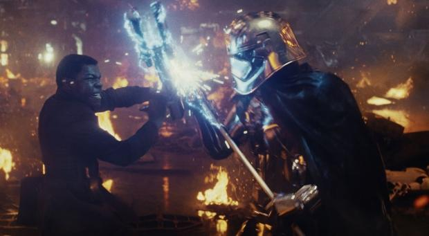
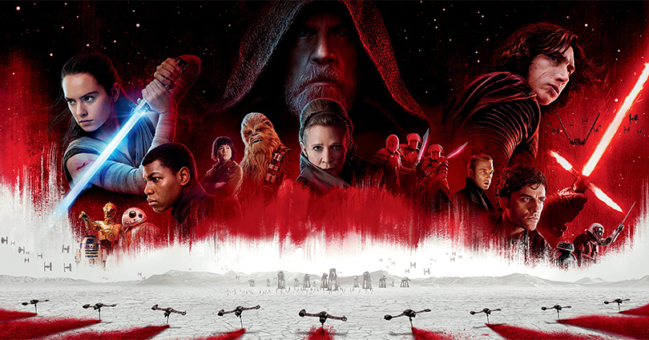
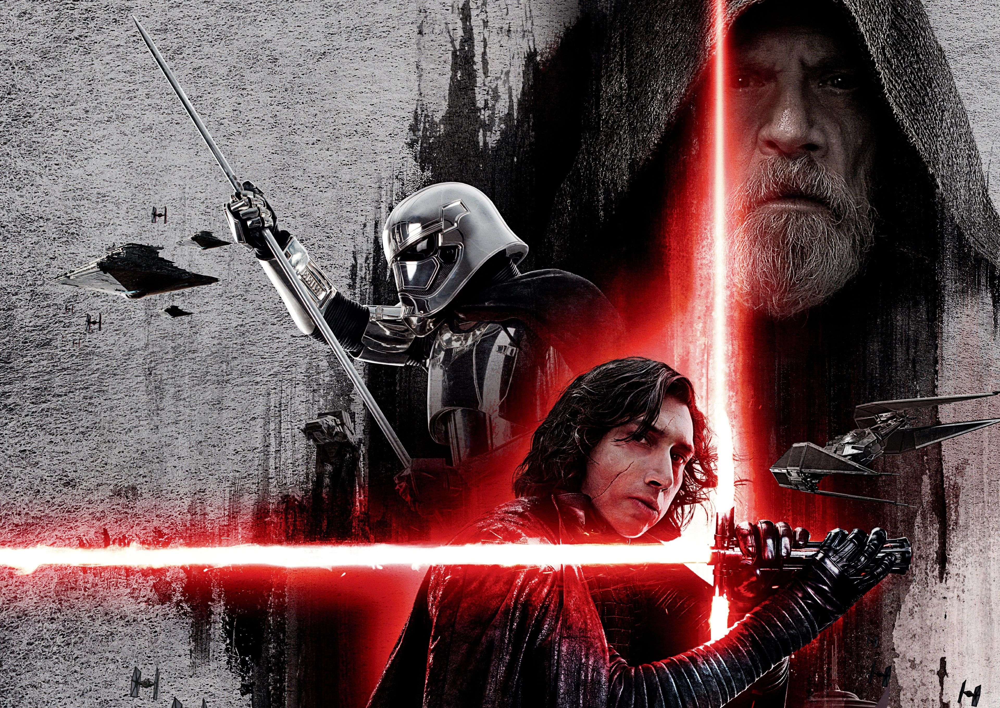

Star Wars: The Last Jedi (also known as Star Wars: Episode VIII – The Last Jedi) is a 2017 American epic space opera film written and directed by Rian Johnson. It is the second installment of the Star Wars sequel trilogy, following The Force Awakens (2015), and it is the eighth episode of the nine-part "Skywalker saga". It was produced by Lucasfilm and distributed by Walt Disney Studios Motion Pictures. The film's ensemble cast includes Mark Hamill, Carrie Fisher, Adam Driver, Daisy Ridley, John Boyega, Oscar Isaac, Andy Serkis, Lupita Nyong'o, Domhnall Gleeson, Anthony Daniels, Gwendoline Christie, and Frank Oz in returning roles,with Kelly Marie Tran, Laura Dern, and Benicio del Toro joining the cast. It features the first posthumous film performance by Fisher, who died in December 2016, and the film is dedicated to her memory.
  